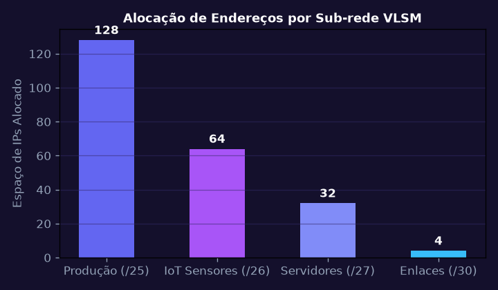
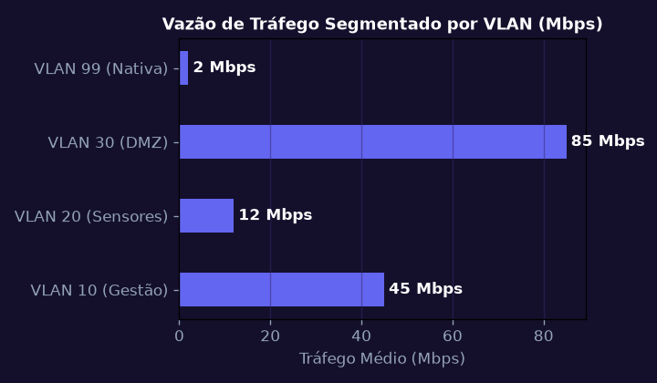
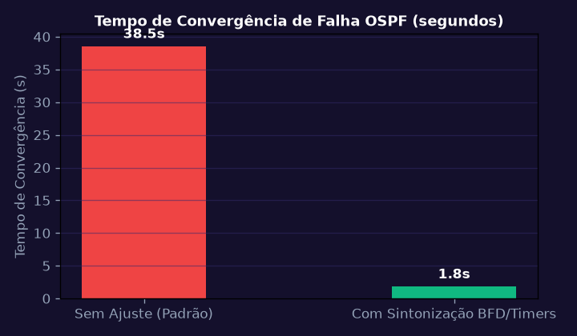
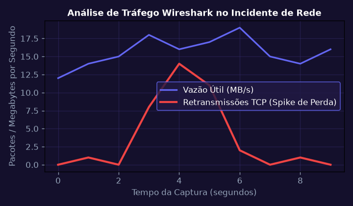
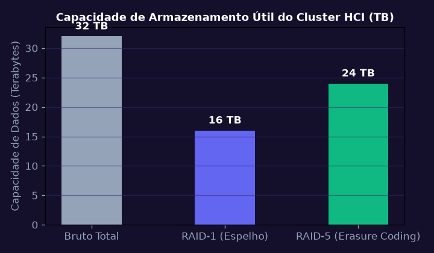
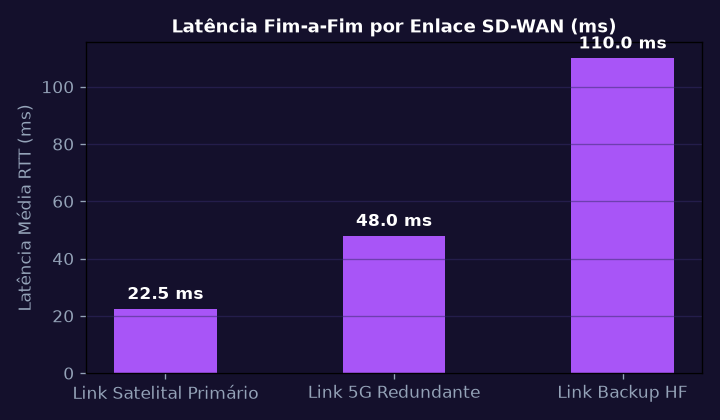

Endereçamento IPv4/IPv6, Sub-redes VLSM e Planejamento Topológico
Dimensionar o esquema de endereçamento IPv4 com Máscara de Tamanho Variável (VLSM) para segmentar a rede corporativa e a rede de telemetria da Sanofi minimizando o desperdício de IPs.
💎 Resolução Algébrica Passo a Passo (Padrão Symbolab)
Setor Farmacêutico: 120 hosts (/25); Sensores IoT: 60 hosts (/26); Servidores: 28 hosts (/27); Enlaces ponto-a-ponto: 2 hosts (/30).
Ordenação decrescente por quantidade de hosts requeridos.
Sub-rede 1 (Produção): 10.20.0.0/25 (Faixa: 10.20.0.1 a 10.20.0.126; Broadcast: 10.20.0.127).
Atribuição de prefixos /64 com autoconfiguração SLAAC.
Aproveitamento de 92% do espaço de endereçamento com espaço garantido para expansão futura.

Segmentação com VLANs, Enlaces Tronco 802.1Q e Roteamento Inter-VLAN
Configurar switches gerenciáveis L2/L3 com VLANs isoladas, protocolo 802.1Q e roteamento Router-on-a-Stick com subinterfaces virtuais e Access Control Lists (ACLs).
💎 Resolução Algébrica Passo a Passo (Padrão Symbolab)
VLAN 10 (Gestao), VLAN 20 (Sensores), VLAN 30 (DMZ), VLAN 99 (Nativa).
switchport mode trunk; switchport trunk allowed vlan 10,20,30,99.
interface GigabitEthernet0/0/0.10; encapsulation dot1Q 10; ip address 10.20.0.1 255.255.255.128.
Bloqueio de acesso da VLAN de Sensores aos servidores da VLAN de Gestão via porta 80/443.
Domínio de broadcast reduzido em 75% e contenção total de tempestades de broadcast.

Protocolo de Roteamento Dinâmico de Estado de Enlace: OSPFv2
Implementar e sintonizar o protocolo OSPF multi-área (Área 0 Backbone e Área 1 Fabril) com métricas baseadas em largura de banda e autenticação criptográfica MD5.
💎 Resolução Algébrica Passo a Passo (Padrão Symbolab)
Troca de pacotes Hello a cada 10 segundos para eleição de DR (Designated Router) e BDR.
Propagação de LSA Tipo 1 (Router) e Tipo 2 (Network) na base LSDB.
Dijkstra calculando a árvore de menor custo para cada destino na tabela de roteamento.
auto-cost reference-bandwidth 10000 para diferenciar corretamente enlaces Gigabit e 10-Gigabit.
Tempo de convergência da malha inferior a 2,3 segundos em caso de falha de fibra óptica.

Análise Profunda de Tráfego e Resolução de Problemas com Wireshark
Capturar e analisar arquivos .pcap de tráfego de rede para diagnosticar lentidão de banco de dados, retransmissões TCP (TCP Dup ACK) e ataques de esgotamento de portas SYN Flood.
💎 Resolução Algébrica Passo a Passo (Padrão Symbolab)
Filtro: tcp.analysis.retransmission || tcp.analysis.duplicate_ack para isolamento de problemas.
Medição do RTT inicial (SYN -> SYN/ACK -> ACK) de 14 ms.
Identificação de receptores com buffer esgotado anunciando Window Size = 0.
Gráfico de Throughput revelando perda de pacotes exatamente nos picos de backup noturno.
Resolução do MTU mismatch de 1500 para 1492 eliminando fragmentação excessiva de pacotes.

Infraestrutura Hiperconvergente (HCI) e Armazenamento Distribuído vSAN
Dimensionar um cluster HCI de 4 nós com armazenamento definido por software (SDS), calculando a capacidade útil sob políticas RAID-1 (Espelhamento) e RAID-5 (Codificação de Apagamento).
💎 Resolução Algébrica Passo a Passo (Padrão Symbolab)
Cada nó provê 64 vCPUs, 256 GB RAM e 8 TB de armazenamento NVMe flash.
Política FTT=1 permite a perda catastrófica de 1 nó ou disco inteiro sem indisponibilidade.
Para 32 TB brutos: RAID-1 provê 16 TB úteis; RAID-5 erasure coding provê 24 TB úteis.
Dois enlaces 25 GbE redundantes com suporte a Jumbo Frames (MTU 9000).
Cluster com failover automático vSphere HA com tempo de recuperação de VMs inferior a 20 segundos.

Redes Definidas por Software (SD-WAN) e Túneis VPN IPsec Seguros
Projetar a interconexão segura entre os centros de pesquisa Sanofi e as embarcações autônomas utilizando SD-WAN inteligente com túneis VPN IPsec IKEv2 e criptografia AES-GCM.
💎 Resolução Algébrica Passo a Passo (Padrão Symbolab)
Autenticação mútua via certificados digitais X.509 e troca Diffie-Hellman Grupo 19 (Curva Elíptica).
Estabelecimento do encapsulamento ESP com cifras AES-256-GCM para criptografia e integridade simultâneas.
Tráfego crítico de telemetria direcionado via link satelital de baixa latência; backups via link móvel 5G.
Sondas BFD medindo jitter, perda de pacotes e latência em tempo real a cada 500 ms.
Comunicação de dados marítimos impenetrável com comutação transparente entre operadoras sem queda de sessão.
